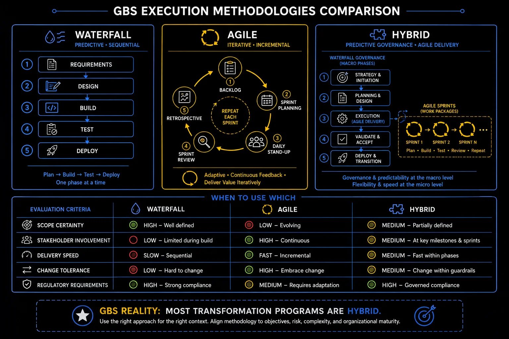

Pillar 8 · Cluster 2
Execution methodologies in GBS transformation
Waterfall, Agile, and SAFe are not religious choices. Each has trade-offs that depend on project complexity, stakeholder maturity, and regulatory constraints.

waterfall, agile, hybrid comparison
Sound familiar?
Topic 01 · Methodology Choice
Waterfall vs Agile in a GBS context
Waterfall plans everything upfront; agile delivers in increments. GBS work needs both — matched to the work, not to fashion. The model is in THE FIX.
Waterfall or agile?
Wrong question. Which work?
 P
PPriya’s migration runs waterfall: fixed sequence, gates, sign-offs. Her improvement sprints run agile: two-week cycles, adjust as you learn.
A new PM tries to run the migration "agile" — and the compliance sign-offs collide with sprint fluidity within a month.
"The method did not fail. The match did."
She feels confirmed in what the work had already taught her.
You pick the method by fashion or preference instead of by the shape of the work.
One selector question: how certain are the requirements?
The PM reframes: waterfall gates for the migration, agile inside the reporting workstream. Both methods finally earn their keep.
+Waterfall vs agile in depth
Waterfall works when requirements are fixed and the end state is known. Agile works when requirements evolve and feedback loops are short. Most GBS programs need elements of both.
Best for
- Regulatory and compliance-driven projects
- Fixed-scope, fixed-budget implementations
- Projects with clear, stable requirements
- External vendor-managed deliverables
Best for
- Iterative development with evolving requirements
- Internal tool building and process redesign
- Projects needing frequent stakeholder feedback
- Innovation and pilot programs
Waterfall — predictive, sequential
Agile — iterative, incremental, continuous feedback
Classify your current initiative: fixed or evolving requirements? Check the method matches.
Agile at enterprise size has a name. You will hear it this year.
Topic 02 · Scaling Agile
SAFe basics for GBS transformation
SAFe scales agile across many teams with synchronized increments. You need meeting-survival literacy, not certification. The model is in THE FIX.
PI planning. ARTs. Epics.
The transformation speaks SAFe now.
 K
KKlaudia’s transformation meeting fills with new vocabulary: release trains, program increments, features and epics.
Half the room nods along, understanding nothing. She looks it up instead.
Twenty minutes of reading decodes a quarter of meetings.
"It is agile, scaled — with a vocabulary tax."
She feels fluent where others fake it.
You nod through SAFe vocabulary for months instead of spending twenty minutes decoding it.
Three terms carry most SAFe meetings.
Next PI planning, she asks a precise question in SAFe terms. The room recalibrates who she is.
+SAFe basics in depth
When multiple teams work on interconnected deliverables, individual team Agile is not enough. SAFe provides the coordination layer.
- Program Increment (PI) — a time-boxed planning period (typically 8-12 weeks) where multiple teams align on shared objectives
- PI Planning — a structured event where all teams come together to plan the increment, identify dependencies, and commit to objectives
- Agile Release Train (ART) — a long-lived team of Agile teams that plans, commits, and delivers together in aligned increments
- Architectural runway — the existing technical foundation that enables near-term features without excessive rework
Decode the three terms before your next transformation meeting. Twenty minutes, once.
Whatever the method, work must be broken down. The WBS does the breaking.
Topic 03 · Planning Tools
Work Breakdown Structure and estimation
A Work Breakdown Structure decomposes big deliverables into pieces you can estimate, assign, and track. No WBS, no honest plan. The model is in THE FIX.
"Migrate the process" is not a plan.
It is a wish with a deadline.
PPriya’s workstream: "migrate reporting." One line, six weeks, no detail.
She breaks it down: inventory reports, map sources, rebuild top ten, parallel-run, sign off. Forty tasks, each estimable.
The honest total: nine weeks, not six.
"The breakdown did not create the delay. It revealed it."
She feels grounded — three weeks before the plan would have lied to everyone.
You estimate the headline and commit to a number no one has actually built.
A WBS follows three rules.
The nine-week truth triggers a scope conversation in week one — instead of an apology in week six.
+Work Breakdown Structures in depth
You cannot estimate what you have not decomposed. The WBS breaks ambiguous scope into estimable, assignable, trackable pieces.
- Decompose to the level where work can be estimated with reasonable confidence (typically 1-3 week packages)
- Use noun phrases, not verb phrases — WBS describes deliverables, not activities
- Apply the 100% rule — child elements must account for 100% of the parent element, nothing more, nothing less
- Involve the team — the people who will do the work should help define and estimate the work packages
- Estimate in ranges — three-point estimation (optimistic, most likely, pessimistic) is more honest and useful than single-point guesses
When to use which — scope, speed, change tolerance
Take your biggest one-line task. Break it into 1–5 day pieces. Re-estimate from the bottom.
Work structured. Cluster 3: the people and the payoff.
- In GBS, the Waterfall vs Agile debate is mostly academic. Real projects use a hybrid — Waterfall governance with Agile delivery sprints. The key is knowing which parts need gate reviews and sign-offs (compliance, migration) and which parts benefit from iteration (automation, tool configuration).
- The biggest Agile failure in GBS is treating "iterative" as "we will figure it out as we go." Iteration without a clear product backlog and acceptance criteria is just chaos with standups. Structure your sprints around deliverables, not activity.
Reference
Glossary
Full glossary at the GBS Insider Club Field Guide.
- PMI — PMBOK Guide, 7th Edition
- Scaled Agile Inc — SAFe 6.0 Framework documentation
- VersionOne — State of Agile Report, 2025
- McKinsey — Agile transformations: why most fail, 2024
Knowing the frameworks is the entry ticket. Applying them — visibly, at your actual job — is what gets you promoted.
The GBS Insider Club Career Paths turn this theory into a guided 90-day program for your role: self-assessment, practical exercises, templates, and Julian's unfiltered practitioner playbook.
Explore the Career Paths → Back to Projects and Transformation